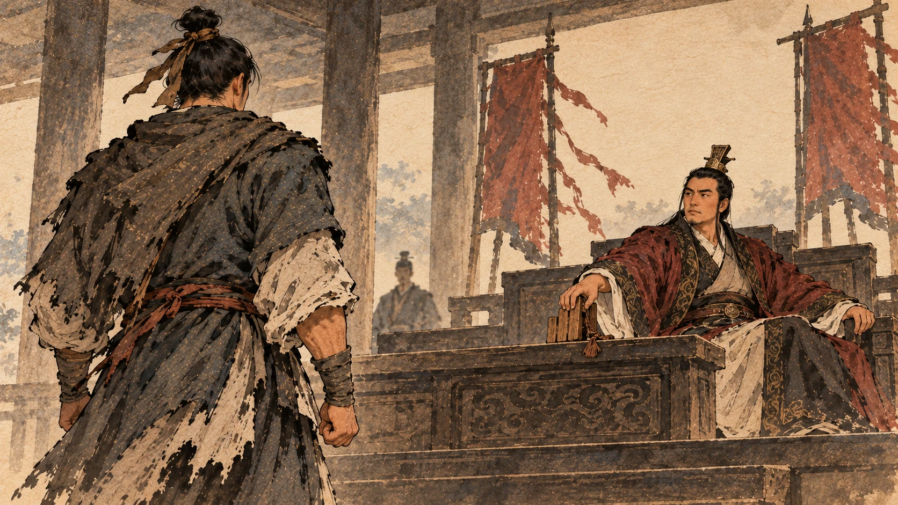
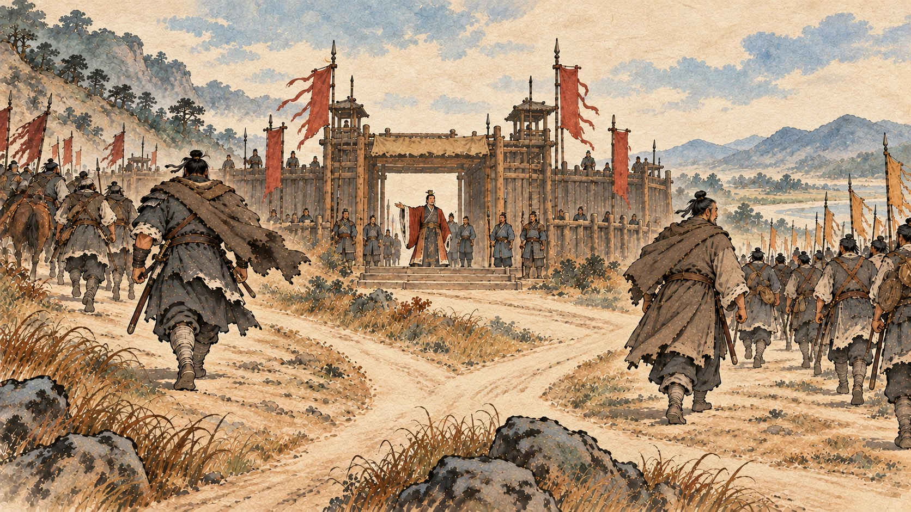
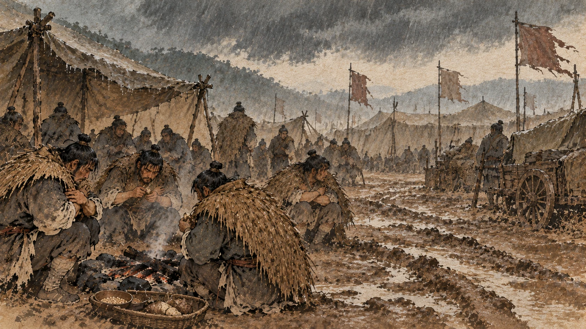
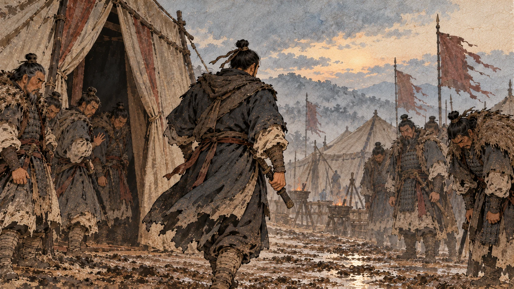
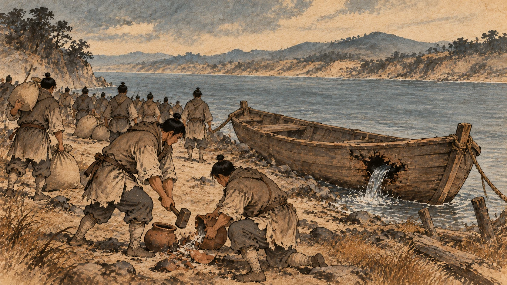
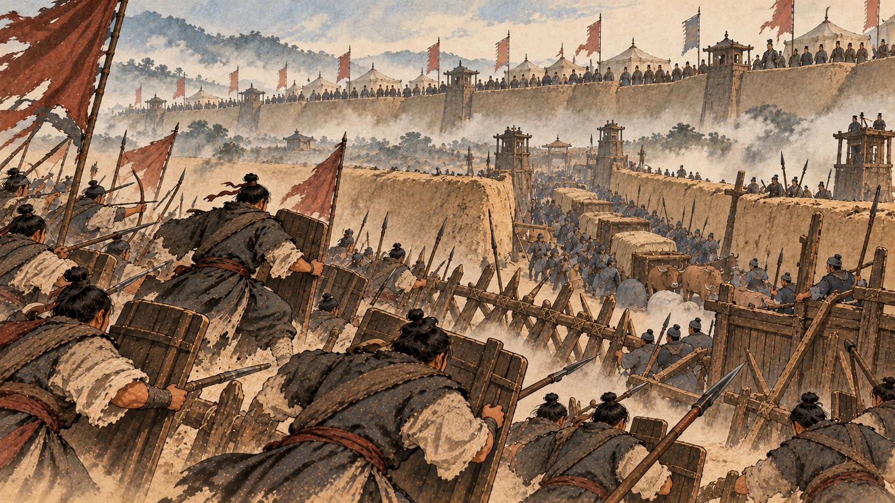
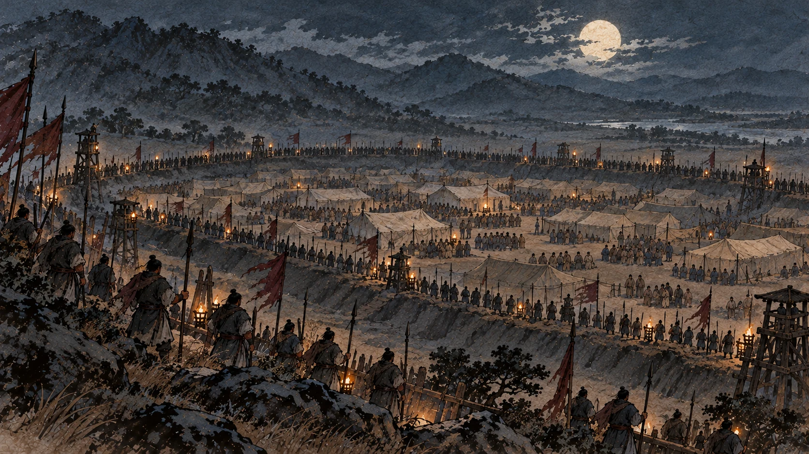

巨鹿之战：砸掉锅、凿沉船
一、主心骨倒了以后

项梁死在定陶。这件事的影响，比一场败仗大得多。
《史记》紧接着写的是楚怀王的动作：怀王恐，从盱台之彭城，并项羽、吕臣军自将之。
怀王害怕了，把都城从盱台迁到彭城，并把项羽和吕臣的军队收归自己直接统领。①
这里要停一下。
你回头看第四章：这位楚怀王，几个月前还在民间给人放羊，是被项梁派人找出来、立起来当旗子的。项梁活着的时候，他是一面旗。
项梁一死，这个人干的第一件事是把军权收到自己手里。
《史记》接着交代了两笔人事安排：以沛公为砀郡长，封为武安侯，将砀郡兵；封项羽为长安侯，号为鲁公。②
两个人都有封号。但你注意一下名字的顺序——刘邦的名字出现在前面。
一个放羊出身的国王，在他唯一的靠山死掉之后，第一件事就是重新分配权力。你在读后面那些故事的时候，记住这一笔：楚怀王不是一个摆设，他有自己的想法，而且他很快就动手了。
二、两条路

项梁死后，秦军的主力压在赵国那边。赵国派人来求救。
楚怀王做了两个安排。
第一，派宋义做上将军，项羽做次将，范增做末将，北上救赵。
第二，令沛公西略地入关——让刘邦往西打，进关中。
然后当着所有将领的面立了一条规矩：先入定关中者王之。
谁先打进关中，谁就是关中的王。③
这两条路，当时看起来是一条硬路、一条空头话。
北边是秦军主力，是硬仗；西边听起来是主战场，可那条路上的秦军据点一样多。而“先入定关中者王之”这句话，更像一句安抚——立规矩的人自己都未必当真。
但有个细节决定了谁走哪条路。
项羽当时不肯北上，他要跟刘邦一起往西打。因为关中是秦国的老家，杀他叔叔的秦军就在那儿，这仇他要亲手报。
楚怀王手下的老将们把他挡下来了。《史记》记了他们的话：项羽为人僄悍猾贼，尝攻襄城，襄城无遗类，皆坑之，诸所过无不残灭。
项羽这个人凶狠残暴，他打过襄城，襄城没留下活人，全给坑了，凡是他经过的地方都被毁得干干净净。④
所以他们建议：不如换一个宽厚的“长者”往西去，一路告谕秦地的父兄，不侵扰百姓，这样才打得下来。
结论是：独沛公素宽大长者，可遣。
只有沛公一向宽厚，像个长者，可以派他去。
于是项羽北上，刘邦西进。⑤
这个安排的理由很讽刺：因为刘邦“宽厚”，所以让他去收人心；因为项羽“残暴”，所以让他去打硬仗。而这两个人后来的结局，跟这一天的判断是连着的。
三、宋义在安阳待了四十六天

先说北边这条路。
宋义这个人是怎么被选上的？《史记》交代了来由：他之前在路上遇到齐国来的使者高陵君，就跟人家说——武信君项梁的军队必定要吃败仗。过了几天，项梁果然败了。
那位齐使到了楚国，就跟楚王说：兵还没打，他先看出了败象，这个人懂兵。
楚怀王把宋义叫来聊了聊，非常满意，于是让他当上将军。他还得了一个很响亮的号：卿子冠军。⑥
然后这支军队开到安阳，停了下来。
停了四十六天，不往前走。⑦
项羽忍不住了，去跟他说：我听说秦军把赵王围在钜鹿，赶紧带兵渡河，我们在外面打，赵国在里面应，一定能破秦军。
宋义的回答是一段很有名的话：不然。夫搏牛之虻不可以破虮虱。今秦攻赵，战胜则兵罢，我承其敝；不胜，则我引兵鼓行而西，必举秦矣。
— 要拍死牛背上的虻虫，不能靠拍死牛身上的虱子。现在秦军攻赵：打赢了，兵也疲了，我们趁他们疲惫；打不赢，我们就直接往西推，一定能拿下秦国。所以不如让秦、赵先打。
然后他补了一句：夫被坚执锐，义不如公；坐而运策，公不如义。
披着铠甲冲上去打，我不如你；坐下来出主意，你不如我。⑧
讲到这里，我得说句公道话：宋义的分析不算错。“承其敝”是那个年代的标准打法——让别人先打，自己捡便宜，孙子兵法里就有这套东西。
那他错在哪儿？
他接着下了一道命令：猛如虎，狠如羊，贪如狼，彊不可使者，皆斩之。
凡是凶猛如虎、狠戾如羊、贪婪如狼、倔强不听使唤的，一律斩首。⑨
这道命令是冲着项羽这类人下的。
然后他做了一件更要命的事：派他的儿子宋襄去齐国当相，亲自送到无盐，摆酒大会宾客。
而他手下这支军队当时的状况，《史记》写得只有八个字：天寒大雨，士卒冻饥。⑩
天冷，下大雨，士兵又冻又饿。
这就是宋义输的地方。他不是战略错，是两件事错：一是他让几万人在雨里等着看秦赵相斗，可他自己没有给这些人一个期限；二是同一时间，他在给儿子送行摆酒。
一支饿着肚子的军队，最不能忍受的不是苦，是看着将军吃喝。
四、早晨的那一刀

项羽的反驳是这么说的：
将戮力而攻秦，久留不行。今岁饥民贫，士卒食芋菽，军无见粮，乃饮酒高会，不引兵渡河因赵食，与赵并力攻秦，乃曰“承其敝”。夫以秦之彊，攻新造之赵，其势必举赵。赵举而秦彊，何敝之承！
我们要合力打秦，却停着不走。现在年成不好，百姓穷困，士兵吃的是芋头和豆子，军中没有存粮，你倒在这儿饮酒大会。不渡河去吃赵国的粮、跟赵合力打秦，还说什么“趁他们疲惫”。以秦军的强，打新立的赵国，一定会把赵拿下；赵被拿下，秦只会更强，哪里还有疲惫可乘！⑪
最后他加了一句判词：今不恤士卒而徇其私，非社稷之臣。
不体恤士兵，只顾自己的私事，这不是国家的臣子。
说完这段话的第二天早晨，项羽去上将军的帐里汇报，就在帐中砍下了宋义的头。
然后他出帐，对全军说了一句：宋义与齐谋反楚，楚王阴令羽诛之。
宋义跟齐国图谋反楚，楚王密令我杀了他。⑫
《史记》写诸将的反应是：皆慴服，莫敢枝梧——全被镇住了，没人敢顶。他们说：首立楚者，将军家也。今将军诛乱。
最早立起楚国的，是你们项家；现在将军您诛除了乱臣。
于是大家共立项羽为“假上将军”——代理上将军。他还派人去追宋义的儿子，在齐国境内追上，杀了。然后他派桓楚去向楚怀王报告。
怀王认了这个结果，正式任项羽为上将军。
五、渡河那一天

先说清楚北边的地形，不然看不懂这一仗。
秦军的布置是这样的：王离、涉间围住钜鹿城；章邯的军队扎在钜鹿南边，给围城的部队运粮。他运粮的办法是筑“甬道”——两边筑墙的一条通道，粮车走在墙里面，外面的人截不了。⑬
所以秦军当时的位置很好：城围着，粮道通着。
项羽先派了当阳君和蒲将军带两万人渡河，试了一下，战少利——小胜，占不到便宜。赵国的陈馀又派人来请兵。⑭
于是项羽做了那件后来被写进所有历史书的事。
他全军渡河。过河之后，做了四件事：
皆沉船——把船全都凿沉。
破釜甑——把锅和蒸锅全都砸了。
烧庐舍——把住的地方烧了。
持三日粮——每人只带三天的口粮。⑮
《史记》把这四件事的用意写得很直白：以示士卒必死，无一还心。
用这个告诉士兵：这一仗只有死，没有回头。
我读这一段的时候，最注意的是“持三日粮”四个字。
前面三件都是表态——沉船、砸锅、烧房子，是砸掉退路。但第四件不是表态，是算计：三天。
三天之内，要么打赢、从敌人那里拿到粮，要么饿死在这片地上。这不是士气，这是把整个军队的时间表压成了一个三天的沙漏。
破釜沉舟从来不是“不怕死”三个字能说完的。它是一个被算过的决定：我知道我不能退，所以我把所有能让我退的东西都拆了。
六、诸侯都在墙上看

然后是战斗本身。
《史记》只给了几十个字：至则围王离，与秦军遇，九战，绝其甬道，大破之，杀苏角，虏王离。涉间不降楚，自烧杀。⑯
围住王离，跟秦军遇上，打了九仗，切断那条甬道，大破秦军；杀了苏角，活捉了王离，涉间不肯投降，自己把自己烧死了。
九战。不是一战定胜负，是打了九次。
而这一仗真正的观众，是旁边那些来救赵的诸侯。
《史记》写：诸侯军救钜鹿下者十余壁，莫敢纵兵。及楚击秦，诸将皆从壁上观。
来救钜鹿的诸侯军队扎了十几座营垒，没有一个敢出兵。楚军跟秦军打的时候，那些将领都站在自己营垒的墙上看着。⑰
“壁上观”这个词就是这么来的——十几支军队，在自己的墙上，看着一支队伍去打那场仗。
然后司马迁写下了他最好的句子之一：
楚战士无不一以当十，楚兵呼声动天，诸侯军无不人人惴恐。
楚军士兵没有一个不是以一当十的，喊声把天都震动了，而墙上的诸侯军人人心惊胆战。⑱
后面发生的事情，你要读慢一点：
於是已破秦军，项羽召见诸侯将，入辕门，无不膝行而前，莫敢仰视。
秦军破了以后，项羽召见各路诸侯的将领。这些人进辕门的时候，全都跪着往前挪，没有一个人敢抬头看。⑲
从这一天起，项羽由是始为诸侯上将军，诸侯皆属焉——他成了诸侯上将军，所有人归他管。⑳
这是项羽一生名望的顶点。这一年他二十五岁上下。
一个学写字没学成、学剑没学成、学兵法只学了一半的人，在一场仗之后，让全天下的将军跪着进屋。
七、然后是章邯

钜鹿之后，秦军还有主力——章邯还在，他手上还有二十多万人。
但秦朝内部出了问题。章邯派人去咸阳请示，在司马门住了三天，赵高不见他。他手下的长史司马欣逃回去，跟他说了一句话：赵高在朝中当家，我们在外面怎么干都没有活路。㉑
陈馀也写了封信给章邯，把话说得更透：白起为秦国立了那么大的功，最后被赐死；蒙恬开地几千里，最后被斩。功劳太多，秦封不完，就找个法把你杀了。你现在做秦将三年，损失了十几万人，而诸侯越打越多——有功也杀你，无功也杀你。㉒
章邯决定投降。
双方在洹水南边的殷虚上立了盟约。见面的时候，《史记》写了一个细节：章邯见项羽而流涕，为言赵高。
章邯见到项羽，哭了，跟他说赵高的事。㉓
项羽给了他一个王号：雍王，把他安置在楚军里。
到这里，秦朝最能打的一支军队，已经不姓秦了。
再往后就是那件很冷的事。
章邯的二十多万降卒，跟着楚军往西走。一路上，从前服徭役路过秦地、被秦人欺负过的诸侯士兵，现在反过来欺负这些降卒。降兵们私下议论：章将军骗我们投降，要是能打进关还好，打不进去，诸侯把我们弄到东边去，秦朝一定会把我们的父母妻儿全杀了。
这些话传到项羽那里。项羽跟黥布、蒲将军商量：秦军降兵还有二十多万，心里不服。到了关中如果不听话，事情就危险了——不如把他们杀掉，只带章邯、司马欣、都尉翳入秦。
于是楚军夜里袭击，把这二十多万人坑在新安城南。㉔
这件事要记住。它不是结尾，是开头。二十万个秦朝人的家，从此都跟项羽结下了仇；而这一点，二十年后会有人在关中替他算账。
巨鹿之战让项羽变成了天下最强的那个人的候选。
也在同一天，另一个人正沿着一条没人跟他抢的路，往西边走。
下一章：刘邦西进——从高阳到霸上。